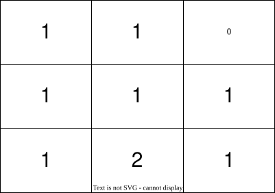
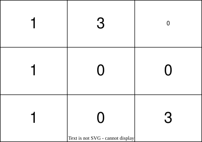

| Category | Difficulty | Likes | Dislikes |
|---|---|---|---|
| Algorithms | Medium | 548 | 78 |
microsoft | tiktok
You are given a 0-indexed 2D integer matrix grid of size 3 * 3, representing the number of stones in each cell. The grid contains exactly 9 stones, and there can be multiple stones in a single cell.
In one move, you can move a single stone from its current cell to any other cell if the two cells share a side.
Return the minimum number of moves required to place one stone in each cell.
Example 1:

Input: grid = [[1,1,0],[1,1,1],[1,2,1]]
Output: 3
Explanation: One possible sequence of moves to place one stone in each cell is:
1- Move one stone from cell (2,1) to cell (2,2).
2- Move one stone from cell (2,2) to cell (1,2).
3- Move one stone from cell (1,2) to cell (0,2).
In total, it takes 3 moves to place one stone in each cell of the grid.
It can be shown that 3 is the minimum number of moves required to place one stone in each cell.Example 2:

Input: grid = [[1,3,0],[1,0,0],[1,0,3]]
Output: 4
Explanation: One possible sequence of moves to place one stone in each cell is:
1- Move one stone from cell (0,1) to cell (0,2).
2- Move one stone from cell (0,1) to cell (1,1).
3- Move one stone from cell (2,2) to cell (1,2).
4- Move one stone from cell (2,2) to cell (2,1).
In total, it takes 4 moves to place one stone in each cell of the grid.
It can be shown that 4 is the minimum number of moves required to place one stone in each cell.
Constraints:
grid.length == grid[i].length == 30 <= grid[i][j] <= 9grid is equal to 9.